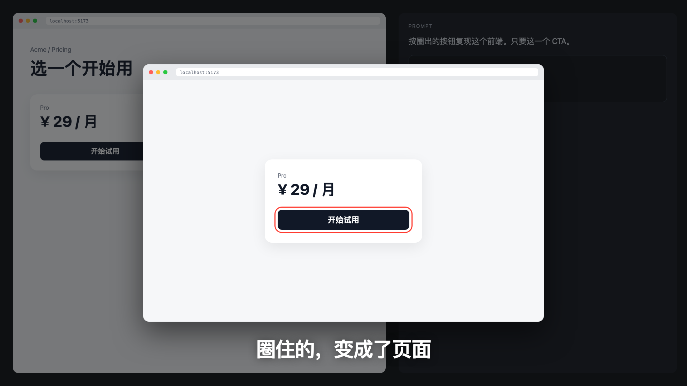

⌃+2
01 唤起
念头来了，就开始。
按下 Control + 2，进入屏幕圈画。
不用先打开另一个编辑窗口。
给想法，一个更直观的表达方式
把想改的地方指给 AI，
在屏幕上圈画、标注，
适用于 macOS 14 及以上 · DoraZoom 1.0.0
Mac App Store 版本正在等待 Apple 审核。查看版本状态
虚构网页，仅用于圈画演示；以下价格不代表 DoraZoom 定价。
已放大中间卡片 · 导出包含完整画面与所有标注
01 想让 AI 改这里，
却写了半屏描述。
02 发出了一张截图，
对方还是没找到重点。
03 讲解已经到下一步，
大家还在找上一步。
和 AI 协作，向团队反馈，给别人讲解。
重点在哪里，就画在哪里。
圈出想修改的组件，标好方向，截下画面。把「改这里」连同上下文，一起粘贴给 AI。

圈出意图 → 截图传达 → AI 接着完成在 Mac 上，随手唤起 DoraZoom。
你熟悉的工作方式，多了一支顺手的笔。
按下 Control + 2，进入屏幕圈画。
不用先打开另一个编辑窗口。
用圈、箭头和文字标明意图。
需要讲细节时，还可以放大画面。
按 Control + 6，选取区域并截图。
再按 Command + V，粘贴给同事或 AI。
DoraZoom 负责屏幕圈画、标注和截图，帮你把需求表达清楚。将标注图粘贴到支持图片输入的 AI 工具后，由该工具继续完成代码或页面修改。
DoraZoom 是 macOS 屏幕工具，可用于网页、应用界面、文档和演示内容。截图可以粘贴到支持图片的聊天、协作和 AI 工具中；具体接收方式取决于目标应用。
这个网页体验在你的浏览器内处理标注和生成图片，不会上传圈画内容或补充文字。复制或保存后，由你决定把它们交给谁。
Mac App Store 即将上线，开放下载后将在此提供官方入口。